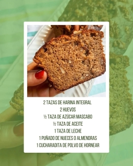
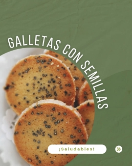

Nuevos productos
Proximamente!
Llega nuestra suscripción mensual con dos opciones para elegir:
- Una versión ideal para snacks
- Otra especialmente pensada para cocinar
Consejos saludables
9 beneficios para la salud de consumir cereales integrales:
- Alto en nutrientes y fibra.
- Reduce tu riesgo de padecer enfermedades cardíacas.
- Reduce tu riesgo de sufrir un derrame cerebral.
- Reduce tu riesgo de obesidad.
- Reduce tu riesgo de padecer diabetes tipo 2.
- Favorece una digestión saludable
- Reducir la inflamación crónica
- Puede reducir su riesgo de cáncer.
- Vinculado a un menor riesgo de muerte prematura.
Recetas
Budín
Con frutos secos y harina integral



Galletas saludables
Con semillas y harina integral
